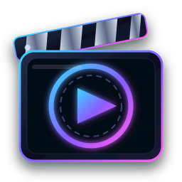
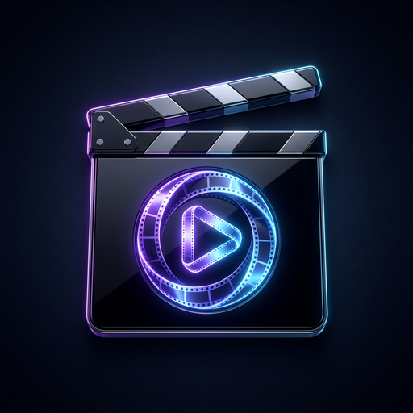
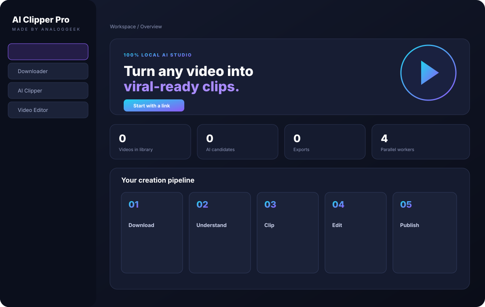
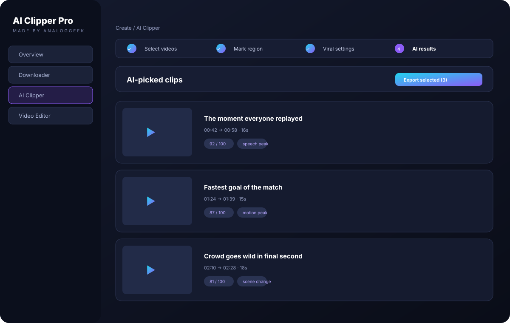
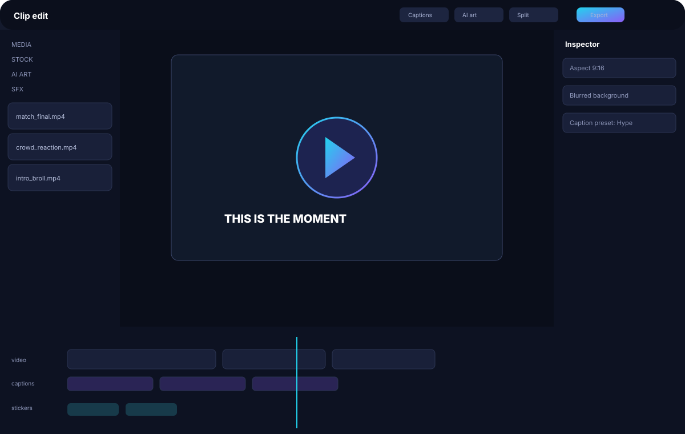

⇩
Downloader + playlists
Max available quality, audio merged, subtitles optional, full playlists with item selection and a local media library.

Get the app ↗Paste any link. AI Clipper Pro finds the engaging moments with local Gemma, Whisper and YOLOX + ByteTrack, polishes them with captions, stickers and sound effects, then exports or uploads them — without your footage ever leaving your machine.

Whisper captions Gemma 2 7B YOLOX + ByteTrack 1080p exportNot just a clipper — a full pipeline from source link to published Short.
Max available quality, audio merged, subtitles optional, full playlists with item selection and a local media library.
Word-level speech energy, hook keywords, scene changes and tracked player activity fused into one viral score.
Select several videos, lock the player or gameplay region, and get a batch of non-overlapping viral candidates.
Video, caption, sticker and audio tracks with split, trim, inspector, import, stock assets and AI art generation.
Auto captions in four presets, royalty-free procedural SFX, music beds, blurred-background reframing and branding.
Batch 1080p renders with fast-start, downloadable MP4s and optional resumable YouTube uploads via your own OAuth app.
Responsive, animated and built for long editing sessions. These are the actual workspace layouts you get after installation.



Any supported video or playlist URL, or import a local file.
Local Whisper transcript and visual activity tracking.
AI picks engaging windows and writes hook titles.
Captions, stickers, SFX and fine cuts in the timeline.
Export all clips or upload to your channel.
Download once, create forever offline. No subscriptions, no footage uploads, no per-clip fees.
The engine binds to 127.0.0.1 with a token regenerated on every launch. Cloud features only activate when you add your own key.
CPU fallback everywhere, CUDA and Apple Metal acceleration where available. Runs on Intel Macs, M-series, Windows and Linux.
bash scripts/release-all.sh --all builds every offline installer via GitHub Actions and publishes checksums.
Every model card in the desktop app has a direct download button. Cloud features link straight to the page where you create the key.
Installers include the app, Python engine and FFmpeg. Model weights are installed from the app.
10 / 11 · x64
Download .exe ↗11 · arm64
Download .exe ↗x64 · DMG
Download .dmg ↗M1/M2/M3/M4 · DMG
Download .dmg ↗AppImage + .deb · x64
Download AppImage ↗Ubuntu / Debian · amd64
Download .deb ↗Windows, macOS, Linux
npm install && npm run dev:appCopy command ⧉Unsigned installers may trigger OS warnings on first launch. Checksums are published in SHA256SUMS.txt with every release.
Yes. Downloading videos needs internet, of course. AI analysis, clipping, editing, rendering and model inference run locally after the one-time model download. Nano Banana, stock search and YouTube upload are opt-in cloud features.
Gemma 2 7B / Gemma 3 4B & 12B through Ollama; Whisper small/medium/large-v3 through faster-whisper; YOLO11 Nano and YOLOX Nano with ByteTrack; SDXL in ComfyUI; Piper voices for narration.
Yes. The clipper searches non-overlapping windows and can process multiple source videos in one job. Every candidate can be rendered individually or batch-exported.
The built-in timeline editor supports video, captions, stickers and audio tracks, split/trim, imported media, copyright-friendly stock search, AI-generated images and high-quality export.